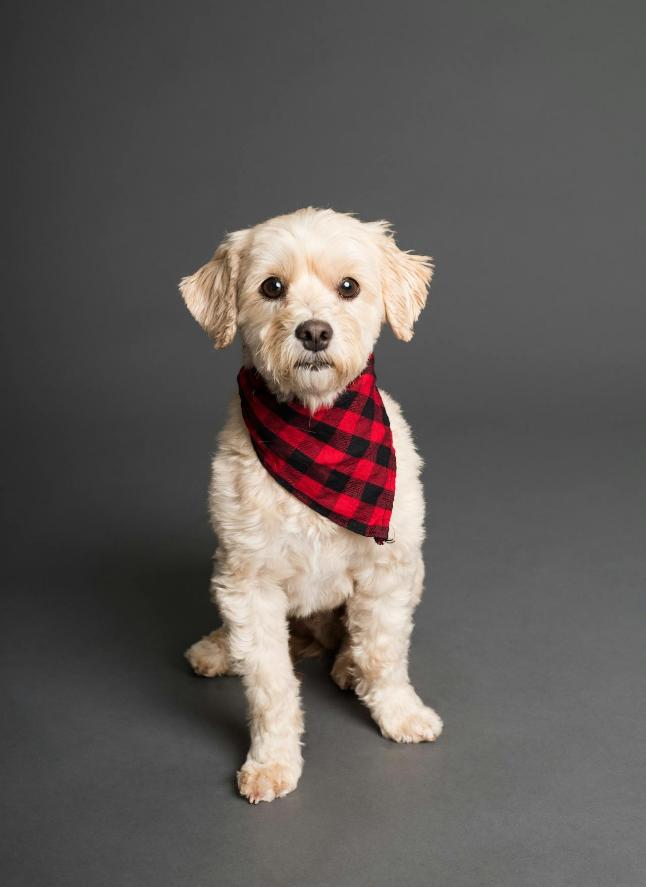
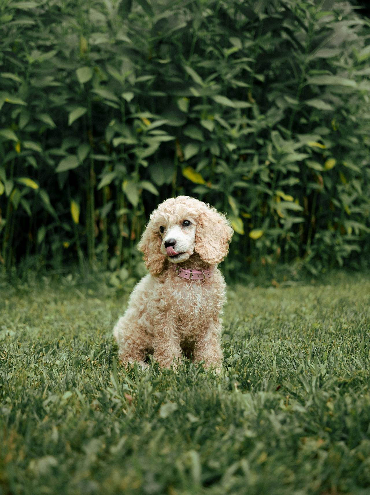
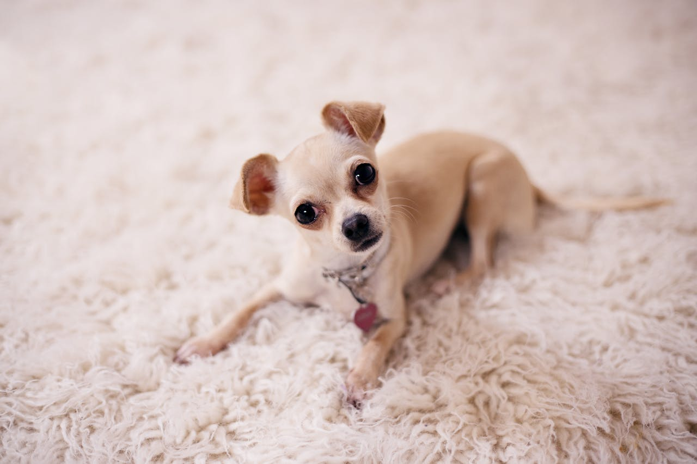
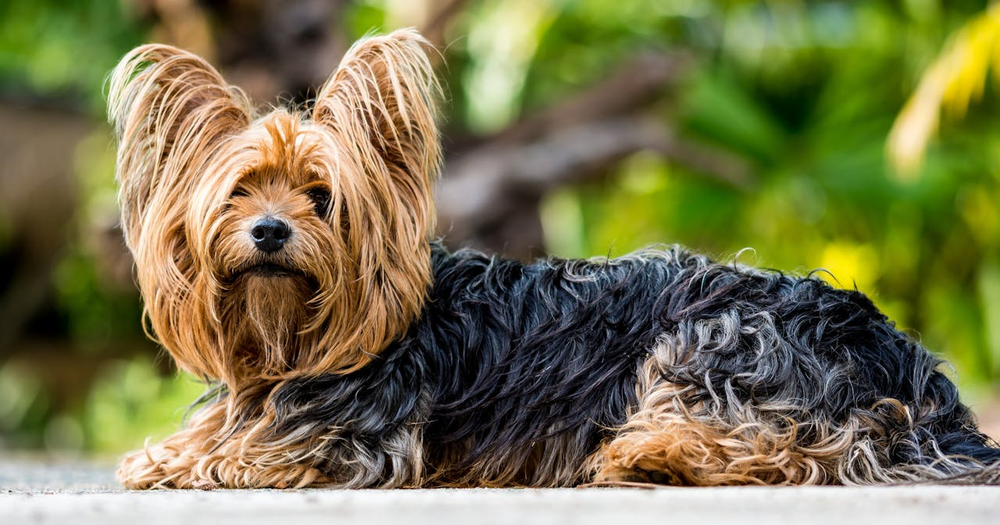
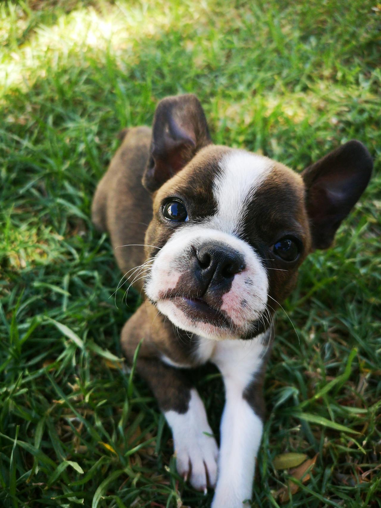
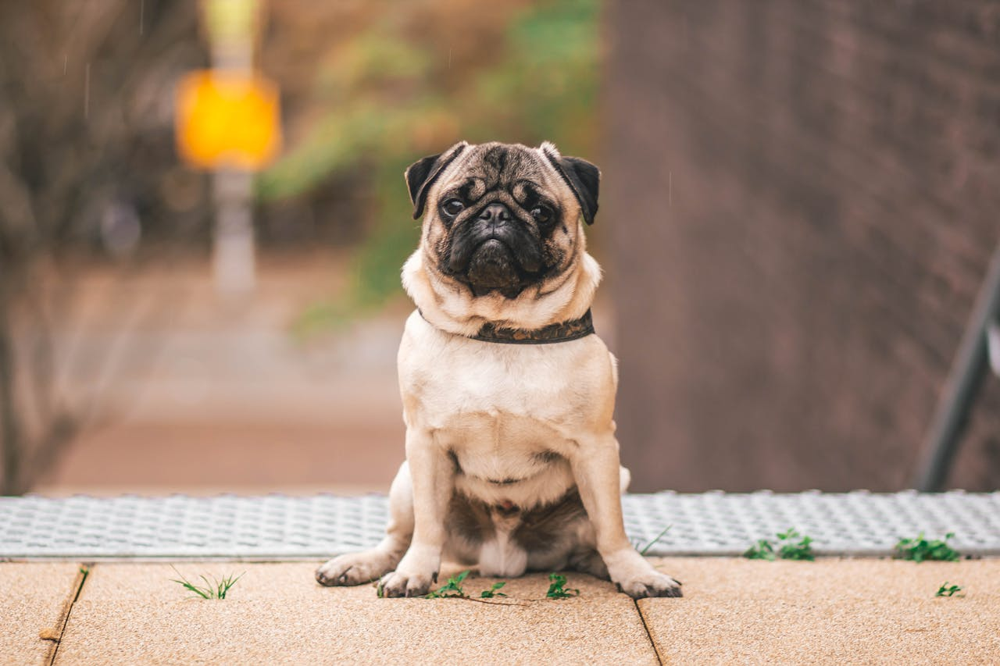
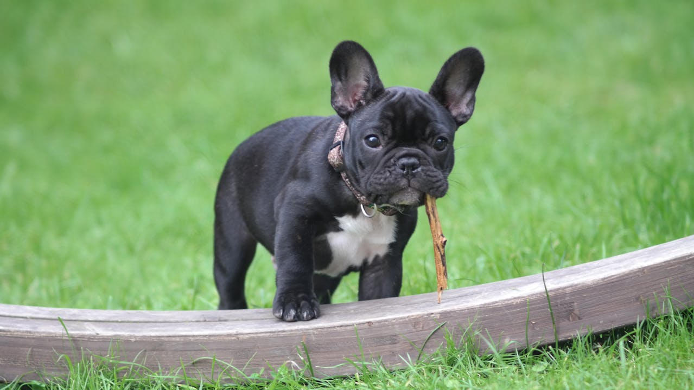
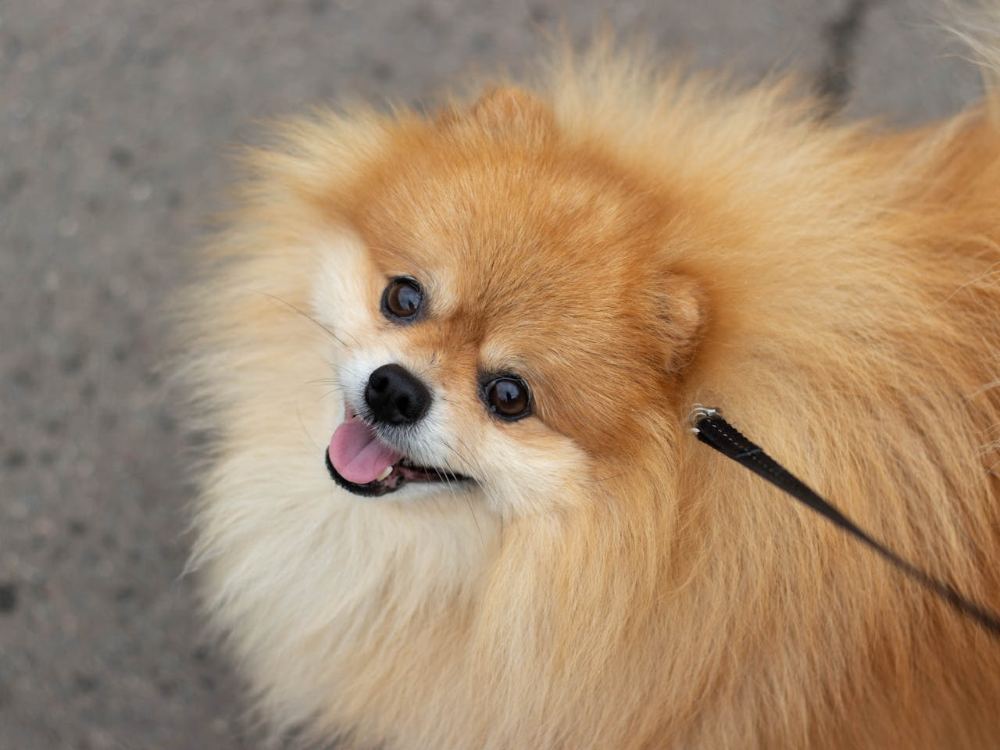

Coluna Pet: 10 Raças de cães de pequeno porte para criar em seu apartamento.
Para escolher a raça de cachorro de pequeno porte ideal para um apartamento, é importante considerar a personalidade da raça, a necessidade de exercícios e a possibilidade de treinamento. Além disso, separamos 10 raças para se criar em um apartamento.
Maltês:
O Maltês é um cão pequeno, com pelagem longa e branca. Chamado cão de colo, o maltês pode chegar aos 25 cm na cernelha e pesar 4 kg. Sua pele é pigmentada de vermelho e preto, principalmente no dorso. Sua pelagem não possui subpelo, é densa, de textura sedosa e brilhante; alongada pelo corpo, permanece lisa da linha superior do tronco, que divide sua pelagem ao meio; em sua cabeça, é também longa e lisa, confundindo-se com a barba. A cor do maltês é característica: branca pura, variando ao máximo, para um marfim pálido. Caso um exemplar apresente, por exemplo, um laranja pálido, esta coloração é descrita como uma imperfeição, sendo portanto, indesejável. Seu preço médio é de R$ 1.500,00 a R$ 3.000,00 e sua expectativa de vida varia entre 12 e 16 anos. (fonte: WIKIPEDIA)
Poodle Toy:
O Poodle Toy é uma raça inteligente e fácil de treinar. Eles são pequenos, com pelagem encaracolada e vêm em várias cores. São ótimos para apartamentos devido ao seu tamanho e personalidade amigável.O Poodle Toy foi criado no início do século 20, quando os criadores novamente criaram Poodles Miniatura para criar um cão de companhia popular. Inicialmente, esses esforços resultaram em filhotes desfigurados ou deformados, bem como filhotes com problemas comportamentais, como resultado da reprodução irresponsável apenas para o tamanho anão. À medida que novas práticas de criação foram adotadas, a variedade tornou-se uma réplica do tamanho de um brinquedo do original.Tentativas posteriores de criar uma variedade ainda menor, o Poodle Teacup, não conseguiram superar anormalidades genéticas graves e foram abandonadas. Sua expectativa de vida é de 10 a 14 anos e seu preço médio é de R$ 1.500,00. (fonte: WIKIPEDIA)
Chihuahua:
É uma raça de cães de pequeno porte originária do México. É uma das menores raças do mundo, ganha em medidas com o Pequeno cão russo. Se divide na variedade de pelo longo e de pelo curto. De acordo com a Federação Cinológica Internacional, a raça é de padrão 218, inserida no grupo 9, pertencente a seção 6. Seu nome vem da região de Chihuahua no México e é descrito como extremamente delicado, afetuoso e possessivo. Assim como todo cão de luxo, como são chamados estes animais de companhia, o chihuahua não é propriamente um cão de caça, embora seja bem visto como um canino de guarda doméstico eficiente. Devido a seu tamanho e sua facilidade de adaptação, é bem tido como animal de estimação por donos inexperientes e práticos. O Chihuahua é uma das menores raças de cães, com um tamanho que varia de 15 a 23 cm. (fonte: WIKIPEDIA)
Shi Tzu:

O nome Shih Tzu vem da palavra chinesa 獅子, que significa "Leão", pois a raça, assim como o Pequinês, foi cruzada para se parecer com o leão na arte oriental tradicional. O nome Shih Tzu é a romanização Wade-Giles da palavra em Mandarim para Leão. A raça Pequinesa também é chamada de Cão-Leão em chinês. Olhos largos, escuros, redondos e bem separados, com pouca ou nenhuma porção visível da esclera. Orelhas longas, caídas e cobertas de pelos. Nariz preto ou marrom-escuro. Os pelos acima do focinho apontam para cima, em uma disposição similar a de um Crisântemo (por isso o nome de Cão-Crisântemo). De pelagem longa, costumam ter até 27cm de altura na cernelha e pesar de 4,5 a 8 kg. Possuem temperamento inteligente, ativo e alerta, e têm comportamento amigável e independente (fonte: WIKIPEDIA)
Yorkshire Terrier:
Yorkshire terrier, também chamada york e yorkie, é uma raça canina de pequeno porte do grupo dos terriers, originária do condado de Yorkshire na Inglaterra. De acordo com a Federação Cinológica Internacional, é a raça de padrão 86, inserida no grupo 3, pertencente à seção 4.Inicialmente criada para ser rateira, seus criadores perceberam de cedo o potencial para uma bem sucedida raça de companhia. Após cruzamentos específicos, o padrão de tamanho, beleza e comportamento foi atingido, o que o tornou um animal popular em poucos anos. (fonte: WIKIPEDIA)
Boston Terrier:
Boston terrier é uma raça canina oriunda da cidade de Boston, nos Estados Unidos. Originalmente eram utilizados como cães de combate e cães de caça a ratos, inclusive no Rat-baiting.Canino de personalidade vivaz, amigável e inteligente. Adaptável a ambientes menores, é bom animal de companhia. Todavia, no ranking de inteligência canina, ocupa a 54ª posição entre as 79 raças listadas, o que representa resistência ao adestramento de obediência a donos inexperientes. (fonte: WIKIPEDIA)
Pug:
O pug é classificado como “cão de companhia“, fazendo parte do grupo dos cães “Toys” ou “de Companhia”, o grupo 9. Os pugs deveriam pesar entre 6,3 e 8,1 kg, sendo cães pesados para a sua estatura. Sua aparência geral deve ser quadrada e maciça, deve mostrar “multum in parvo” (muita substância em um pequeno volume), o que transparece em sua forma compacta, com proporcionalidade entre as partes e musculatura firme.(fonte: WIKIPEDIA)
Bulldog Francês
O Bulldog Francês é um cão pequeno, com pelagem curta e lisa. Eles são conhecidos por serem amigáveis e brincalhões, tornando-os ótimos companheiros para famílias. Além disso, eles não precisam de muito exercício, o que os torna ideais para apartamentos.(fonte: WIKIPEDIA)
Lulu da Pomerânia:
Os lulus-da-pomerânia são pequenos cães com peso de acordo com a altura , que varia entre 18 e 24 cm na cernelha( padrão da raça pela FCI e CBKC). São compactos, mas resistentes com uma abundante pelagem altamente texturizada com uma cauda alta, plumada e plana. A pelagem externa forma um colar de pelos ao redor do pescoço, pelo que os lulus são bem conhecidos, e eles também têm uma franja plumosa de pelos sobre os membros posteriores.(fonte: WIKIPEDIA)
Dachshound

Dachshund ou teckel (em alemão: Dackel), também apelidado de cão-salsicha, é uma raça de cães oriunda da Alemanha. Esta raça está inserida em grupo próprio da FCI devido a sua grande variedade de tamanho e pelagem: standard, miniatura e kaninchen, e de pelo: longo, liso e duro. Esse cão é descrito como caçador de toca, com olfato bastante apurado que permite seguir pistas facilmente e que o torna eficaz em ataques surpresas a presas pequenas. É dito ainda um bom sabujo, capaz de perseguir animais maiores, já que, apesar das pernas curtas, é leve.(fonte: WIKIPEDIA)